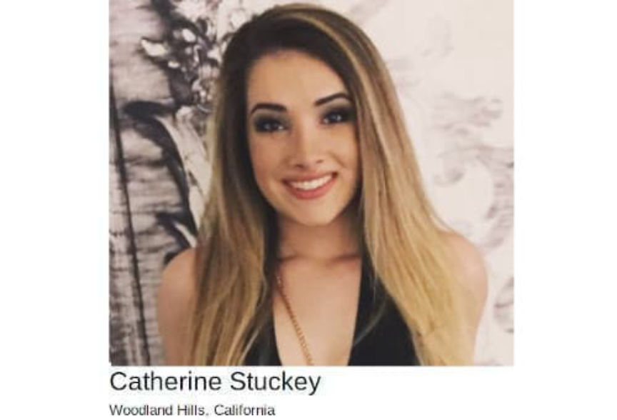
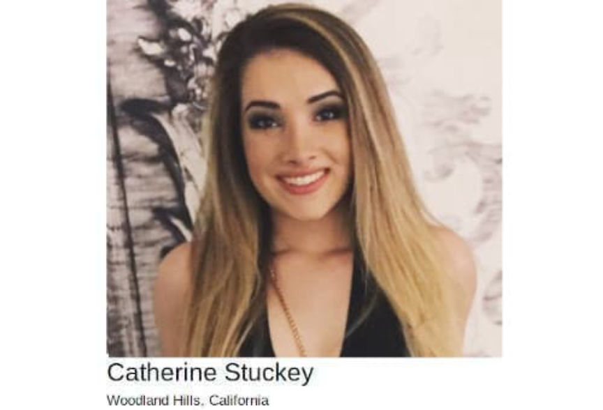

Dream Vendor CaliCartel Admits Drug Trafficking Conspiracy
~4 min read | Published on 2020-07-17, tagged Darkweb-Vendor, Drugs, Pleaded-Guilty using 765 words.
A Woodland Hills woman admitted selling drugs on the darkweb through vendor accounts on several marketplaces, including Dream Market and Nightmare Market. Darkweb vendor accounts under her control included “RaisedByAppeals” and “Diablow,” and “CaliCartel,” among others.
Catherine Stuckey, 27, of Woodland Hills, pleaded guilty to conspiracy to distribute controlled substances. The charge pertained to Stuckey’s distribution of heroin, cocaine, and methamphetamine.

Stuckey–as well as her indicted co-conspirators–operated several darkweb vendor accounts, including:
Diablow; Raiseappeals; RaisedByDiablow CaliCartel; Playground; GaminoCrimeFamily; DopeQueen; BuxomBrunette
The Northern California Illicit Digital Economy (NCIDE) Task Force identified Stuckey and her co-conspirators after several so-called “undercover purchases.” Investigators would use regular accounts on darkweb marketplaces to purchase of contraband. The police later search the package and drugs for any information useful to their investigation. In many cases, the majority of the identifying information comes from an analysis by Postal Inspectors with the United States Postal Inspection Service[img=]Investigators included pictures of the packages in some of the court documents[/img]
Instead of her own address, Stuckey shipped packages with a return address associated with a local business, including:
Corbin Cosmetics; Cee Cee Cosmetics; CC Consmetics; C&C Cosmetica. WildStylz Cool Covers
Stuckey used of the email [email protected] (an abbreviated form of CaliCartel).
The undercover purchases began in 2018 and ended in May 2019. Investigators made the first undercover purchase on October 15, 2018, when they purchased two grams of cocaine from “Calicartel” on Dream Market. The investigators received 2.9 grams of a “white powdery substance that tested positive for cocaine” on October 22. Research on the postage label used on the package of cocaine led investigators to an account with Encidia, an internet postage provider. The account belonged to Gabriel Alva, one of Stuckey’s accomplices. Alva’s Encidia account led to the discovery of five accounts with the United States Postal Service (USPS) under Alva’s name.
On January 10, 2019, the investigators ordered 3.5 grams of heroin from “RaiseAppeals” on Dream Market. On January 11, investigators conducting surveillance on Alva’s residence observed Stuckey exit her residence with a bin. Alva left the house after Alva and carried a bag. After loading the bin into a car, Stuckey and Alva drove to a local Post Office. At the Post Office, Stuckey and Alva dropped 42 packages into a box for outgoing mail. They picked up some of the free shipping supplies offered by USPS and returned to Alva’s residence.
[img=]Security cameras at the Post Office captured Stuckey dropping off packages[/img]
Investigators collected the packages that Stuckey and Alva had dropped in an outgoing mail container. The address on one of the packages matched the address an investigator had given RaiseAppeals after placing an order for 3.5 grams of heroin. Employees at the Post Office told investigators that the duo regularly dropped off similar packages. Almost daily, the employee said.
[img=]The CaliCartel Profile on Recon[/img]
Investigators continued making undercover purchases while conducting surveillance on Stuckey and her accomplices. They acquired search warrants for Alva’s Gmail account. A search of her inbox led to the discovery of incriminating emails between Alva and Stuckey. One, sent from Alva to Stuckey on April 15, 2018, made it into one of the court documents. The text is below.
Have my money ready. Have the fucking printout of both your Venmo and excel sheet. Do not forget what you are involved in. Because now, from the moment you took one single payment until whenever it is I die or get out of all this, you are part of this organization.
Other snippets include:
Stuckey to Alva: “… In terms of work, if we can agree on a set amount that we both agree is reasonable I’ve earned since July that would be best.” -
Alva to Stuckey: “Say goodbye to law school bitch.”
After reading the email (the first one), investigators obtained a search warrant for Venmo accounts belonging to Alva and Stuckey. On March 1, 2019, investigators obtained Venmo transaction records for both accounts. Specific people paid Alva until December 2017 when Venmo banned the account. After the ban, the same people started sending similar payments to Stuckey’s account.
[img=]The conspirators put the name "Bridgette B." in place of their own on outgoing packages[/img]
Investigators continued to order small quantities of drugs from Stuckey’s accounts on Dream Market while conducting surveillance at her house. When Dream Market announced their shutdown, Stuckey’s accounts opened accounts on other marketplaces with similar names.
On May 16, federal authorities arrested Stuckey and her co-conspirators. During the search that followed Stuckey’s arrest, investigators found more than 23 kilograms of methamphetamine, 1.9 kilograms of heroin, and 2.7 kilograms of cocaine in her residence.
Stuckey pleaded guilty to conspiracy to distribute controlled substances on July 14, 2020
U.S. District Judge John A. Mendez scheduled Stuckey’s sentencing hearing for October 20, 2020.
Catherine Stuckey, 27, of Woodland Hills, pleaded guilty to conspiracy to distribute controlled substances. The charge pertained to Stuckey’s distribution of heroin, cocaine, and methamphetamine.

Catherine's College Alumni Profile
Stuckey–as well as her indicted co-conspirators–operated several darkweb vendor accounts, including:
The Northern California Illicit Digital Economy (NCIDE) Task Force identified Stuckey and her co-conspirators after several so-called “undercover purchases.” Investigators would use regular accounts on darkweb marketplaces to purchase of contraband. The police later search the package and drugs for any information useful to their investigation. In many cases, the majority of the identifying information comes from an analysis by Postal Inspectors with the United States Postal Inspection Service[img=]Investigators included pictures of the packages in some of the court documents[/img]
Instead of her own address, Stuckey shipped packages with a return address associated with a local business, including:
Stuckey used of the email [email protected] (an abbreviated form of CaliCartel).
The undercover purchases began in 2018 and ended in May 2019. Investigators made the first undercover purchase on October 15, 2018, when they purchased two grams of cocaine from “Calicartel” on Dream Market. The investigators received 2.9 grams of a “white powdery substance that tested positive for cocaine” on October 22. Research on the postage label used on the package of cocaine led investigators to an account with Encidia, an internet postage provider. The account belonged to Gabriel Alva, one of Stuckey’s accomplices. Alva’s Encidia account led to the discovery of five accounts with the United States Postal Service (USPS) under Alva’s name.
On January 10, 2019, the investigators ordered 3.5 grams of heroin from “RaiseAppeals” on Dream Market. On January 11, investigators conducting surveillance on Alva’s residence observed Stuckey exit her residence with a bin. Alva left the house after Alva and carried a bag. After loading the bin into a car, Stuckey and Alva drove to a local Post Office. At the Post Office, Stuckey and Alva dropped 42 packages into a box for outgoing mail. They picked up some of the free shipping supplies offered by USPS and returned to Alva’s residence.
[img=]Security cameras at the Post Office captured Stuckey dropping off packages[/img]
Investigators collected the packages that Stuckey and Alva had dropped in an outgoing mail container. The address on one of the packages matched the address an investigator had given RaiseAppeals after placing an order for 3.5 grams of heroin. Employees at the Post Office told investigators that the duo regularly dropped off similar packages. Almost daily, the employee said.
[img=]The CaliCartel Profile on Recon[/img]
Investigators continued making undercover purchases while conducting surveillance on Stuckey and her accomplices. They acquired search warrants for Alva’s Gmail account. A search of her inbox led to the discovery of incriminating emails between Alva and Stuckey. One, sent from Alva to Stuckey on April 15, 2018, made it into one of the court documents. The text is below.
Have my money ready. Have the fucking printout of both your Venmo and excel sheet. Do not forget what you are involved in. Because now, from the moment you took one single payment until whenever it is I die or get out of all this, you are part of this organization.
Other snippets include:
Stuckey to Alva: “… In terms of work, if we can agree on a set amount that we both agree is reasonable I’ve earned since July that would be best.” -
Alva to Stuckey: “Say goodbye to law school bitch.”
After reading the email (the first one), investigators obtained a search warrant for Venmo accounts belonging to Alva and Stuckey. On March 1, 2019, investigators obtained Venmo transaction records for both accounts. Specific people paid Alva until December 2017 when Venmo banned the account. After the ban, the same people started sending similar payments to Stuckey’s account.
[img=]The conspirators put the name "Bridgette B." in place of their own on outgoing packages[/img]
Investigators continued to order small quantities of drugs from Stuckey’s accounts on Dream Market while conducting surveillance at her house. When Dream Market announced their shutdown, Stuckey’s accounts opened accounts on other marketplaces with similar names.
On May 16, federal authorities arrested Stuckey and her co-conspirators. During the search that followed Stuckey’s arrest, investigators found more than 23 kilograms of methamphetamine, 1.9 kilograms of heroin, and 2.7 kilograms of cocaine in her residence.
Stuckey pleaded guilty to conspiracy to distribute controlled substances on July 14, 2020
U.S. District Judge John A. Mendez scheduled Stuckey’s sentencing hearing for October 20, 2020.